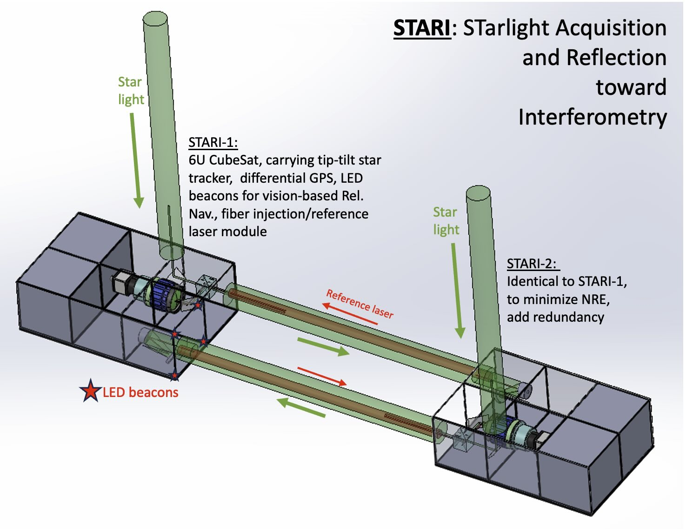

About Me
Education: B.S. in Honors Astronomy & Astrophysics and Interdisciplinary Physics, Minor in Climate & Space
Research Interests: Instrumentation, Space Mission, Massive Star Evolution
Hobbies: Card Magic & Sleight of Hand, Origami, Miniature Painting, Dungeons & Dragons
Research

Kinematics of WR Stars in the LMC
I am working with Professor Sally Oey on a project using the kinematics of Wolf-Rayet (WR) stars in the Large Magellanic Cloud (LMC) to learn about their origins. WR stars are massive, exotic stars whose extremely powerful stellar winds strip them of their outer layers. How they form and evolve is an ongoing field of study, with multiple proposed evolutionary pathways. WR star velocities can help constrain their origins, providing evidence of past dynamical or binary interactions. I presented my findings via iPoster at the 244th AAS meeting in Madison, Wisconsin. This work has resulted in a first-author publication, which has been submitted to the Astrophysical Journal.
STARI
I am an undergraduate Research Assistant working with Professor John Monnier on the STARI cubesat mission. STARI (STarlight Acquisition and Reflection towards Interferometry) is the first space mission led by Michigan’s Astronomy department. In conjunction with four other institutions, it aims to demonstrate crucial technology required to put an interferometer in space.
Under Monnier’s guidance, I have designed and machined components for the payload prototypes built in the lab. I have also written software to process images from our cameras to control fine positioning mirrors using Motor Control Language (MCL). I am currently helping prepare for the mission’s NASA systems requirements review by fleshing out our CAD models for the payload.
Contact
Email: cadenb@umich.edu